TECHNICAL STUDY GUIDE 原 PDF · 01
DeepSeek 技术学习报告
面向大模型算法工程师｜架构、数据、训练与推理
从模型计算图到数据闭环，从分布式训练到推理服务。以官方论文和代码为依据，建立能够阅读、推导、定位瓶颈与设计复现实验的技术体系。
这张图回答什么
先建立四层地图：架构决定怎么计算，数据决定学什么，训练决定怎么更新，推理决定怎么服务。
坐标、图例与方向
这是一张分层关系图，没有数值坐标；从上到下是四种分析视角，色块高度不表示成本或重要性。
按这个顺序看
先选一个实际问题，再沿四层追问。例如长上下文慢：架构是否减少KV读取？数据是否训练过长依赖？训练目标是否覆盖？推理缓存与调度是否合适？
代入一个例子
同样是MoE，增加专家可以增加容量，但数据是否足以训练各专家、训练通信是否拥堵、推理热点是否失衡，要分别回答。
能得出什么，边界在哪
色块之间并非相互独立；最终效果来自四层共同作用，不能把组件名当作完整训练配方。
资料截止：2026 年 10 月 26 日。仓库 main 会变化，部署和复现应固定提交与依赖。
范围：V2/V3/R1/V3.2 的基础设计，以及 V4/V4.1 与 DeepInfer 的后续变化。
阅读前提：熟悉 Transformer、PyTorch、反向传播及基本分布式训练。
这是独立学习整理，不是 DeepSeek 官方文档。原始论文、代码和图的权利归原作者；图旁标有来源，页脚来源编号可点击，完整链接见文末。
阅读导航 原 PDF · 02
用四条主线组织知识
每一章都要回答：它改变了什么，为什么有效，如何验证。
| 主线 | 阅读位置 | 应形成的能力 |
|---|---|---|
| 公开边界与代际 | 第 3—4 页 · 跳转本章 | 区分权重、结构、训练系统、数据与服务的开放程度 |
| 模型架构 | 第 5—11 页 · 跳转本章 | 追踪 tensor shape，估算计算、参数与缓存，比较代际变化 |
| 数据与训练 | 第 12—20 页 · 跳转本章 | 重建数据闭环、优化目标、并行与精度，并识别复现缺口 |
| 推理系统 | 第 21—28 页 · 跳转本章 | 理解调度、缓存、并行、推测解码和部署预算 |
| 验证与学习路线 | 第 29—31 页 · 跳转本章 | 定义正确指标，规划小规模消融，按调用链阅读源码 |
| 参考与术语 | 第 32 页起 · 跳转本章 | 查证原文、图号、仓库版本与缩写含义 |
统一的分析方法
算法层：结构与目标函数怎样改变建模能力？
数值层：精度、量化、归一化、采样与训练概率是否一致？
系统层：计算、内存、通信、调度的关键路径在哪里？
证据层：结论来自论文、可运行源码、官方测量，还是本报告的示意推导？
01 / 公开边界 原 PDF · 03
哪些东西可以直接学与复现
公开模型结构与权重，不等于公开从原始语料到线上服务的整套工程。
| 对象 | 可核实公开内容 | 复现边界 |
|---|---|---|
| 模型结构与权重 | 技术报告、config、参考模型前向与 checkpoint | 能读结构和加载权重；不自动包含训练配方与数据 |
| HAI-LLM | 官方设计介绍；论文披露使用方式 | 未核实到完整公开的内部训练运行时仓库 |
| DualPipe / DeepEP / DeepGEMM | 流水线、通信与计算组件 | 组件需与模型、优化器、分组和调度共同集成 |
| 3FS / Smallpond | 存储和数据处理基础设施 | 工具可用不代表训练语料及内部过滤器已全部发布 |
| DeepSpec | draft 模型数据准备、训练和评估代码 | 专项推测解码训练，不是通用大模型预训练框架 |
| DeepInfer | 当前支持模型的离线推理核心 | 完整在线服务、分布式缓存及负载均衡仍需补齐 |
数据核验的例子：R1 v2 附录 I（PDF 第 66 页）写到发布 SFT/RL 数据，但下载位置仍为占位符“xxx”。这属于报告中的发布表述，不能作为完整数据现已可下载的证据。官方专项数据与样例应逐项查验。
02 / 代际地图 原 PDF · 04
把结构创新与训练创新分开
按具体版本理解设计，不把某一代的实现套到所有 DeepSeek 模型。
| 版本 | 主线 | 阅读重点 |
|---|---|---|
| V2 | MLA + DeepSeekMoE | 低秩缓存、共享/路由专家与稀疏激活 |
| V3 | 结构、训练目标与系统协同 | 负载均衡、MTP、FP8、流水线与通信重叠 |
| R1 / R1-Zero | 基于 V3-Base 的后训练 | 奖励、GRPO、轨迹生成与多阶段数据回灌 |
| V3.2 | 稀疏注意力与长上下文 | DSA indexer；新增稀疏选择如何训练和验证 |
| V4 | 更系统的结构与精度设计 | CSA/HCA、mHC、MoE 路由调整与优化器设计 |
| V4.1-Flash | 面向输入密集的 Agent 工作负载 | CED、CSA2、Engram、缓存复用、多模态与数据/环境规模化 |
R1 的两个口径：完整 R1/R1-Zero 使用 V3-Base 骨干；R1-Distill 是在 Qwen 或 Llama 底座上用教师轨迹微调的小模型。蒸馏版的注意力和参数布局由对应底座决定，不能当成缩小版 V3。
03 / 模型架构 原 PDF · 05
V3：一张图串起 MLA 与 MoE
原图阅读：先看单层残差结构，再分别展开注意力与前馈分支。
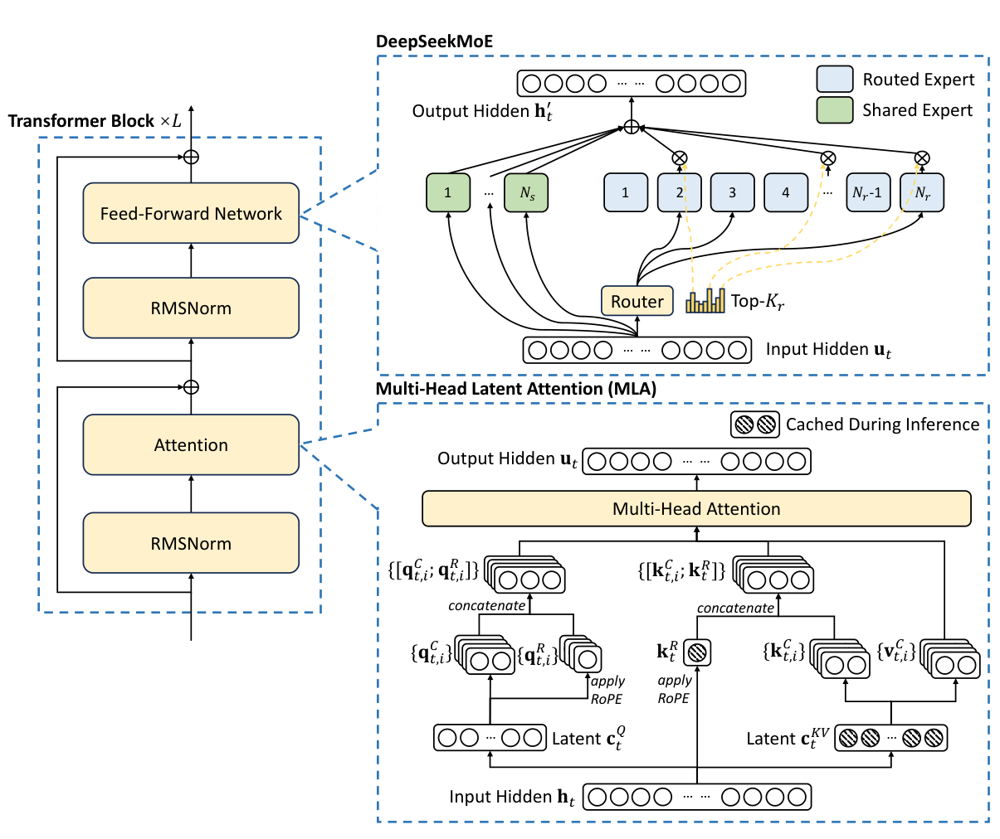
这张图回答什么
把一层Transformer拆成两项优化：MLA处理注意力状态，MoE处理前馈网络的容量与稀疏计算。
坐标、图例与方向
结构图无横纵数值轴。左边箭头由下向上；右下放大Attention，右上放大FFN。绿色为共享专家，浅蓝为路由专家；斜线小圆标出推理时缓存的状态。
按这个顺序看
先沿左侧走RMSNorm→Attention→残差相加→RMSNorm→FFN→残差相加。再到右下寻找latent KV和单独RoPE key；最后到右上追踪router如何选专家、专家输出如何加权求和。
代入一个例子
一个token经过MoE层时，V3会用共享专家并选8个路由专家，而不是计算全部256个路由专家。但专家权重仍要被某些设备保存。
能得出什么，边界在哪
示意层图不能代替逐层配置：V3前3层用dense FFN。图中的专家数量和选择标记是通用符号，实际数量要读配置。
计算路径：隐状态依次进入归一化、注意力、残差相加，再进入归一化、前馈网络与第二条残差。MLA 主要改变注意力的参数化和缓存；MoE 主要改变前馈分支的容量、激活与通信。
03 / 模型架构 原 PDF · 06
MLA：缓存什么，比缓存多少更重要
下面给出便于理解的简化形式；位置编码分支与矩阵布局仍需对照原文。
通过低维 latent 表示内容 K/V；解码可在代数等价条件下重排矩阵乘法，避免把每个历史 token 的完整多头 K/V 长期保存。RoPE 位置分量需要单独处理，不能直接把所有投影无条件合并。
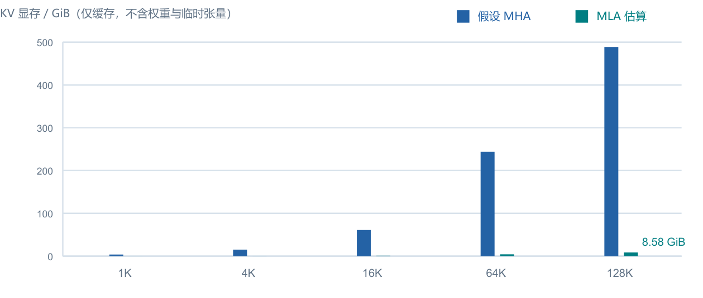
这张图回答什么
回答序列越长时，保存历史注意力状态需要多少显存，以及MLA压缩缓存为什么有价值。
坐标、图例与方向
横轴为上下文长度1K、4K、16K、64K、128K，本图K=1024；纵轴是仅KV缓存占用，单位GiB，线性刻度。蓝柱为假设MHA，青柱为MLA估算。
按这个顺序看
固定同一组层数、头数、精度，逐个长度对比柱高；再观察长度加倍时两种缓存均近似翻倍。差别来自每token保存的元素数，不是把历史token删掉。
代入一个例子
B=1、61层、BF16、128Ki token时，假设MHA约488GiB；MLA的512维latent加64维位置key约8.58GiB。二者约56.9倍是本假设下的容量比。
能得出什么，边界在哪
这是整理者的反事实计算，不是两个产品实测。没有包含权重、分页、激活、索引、通信缓冲或临时工作区；不能据此保证单卡可运行。
自绘图｜整理者计算的反事实对照。设 batch=1、61 层、128 头、头维度 128、BF16；MLA 缓存为 512+64。假设 MHA 缓存为 2×H×d。不是两款产品的实测显存对比。
| 估算式 | 含义 |
|---|---|
| MHA：B × S × L × 2H d × bytes | K、V 均按所有头长期保存的假设基线 |
| MLA：B × S × L × (d_latent+d_rope) × bytes | 仅对指定缓存布局成立；不含索引、分页与工作区 |
验证任务：实现小维度展开版与吸收矩阵版，先在高精度下比较 logits，再逐步加入 RoPE、分页缓存和低精度；观察误差是否随上下文长度累积。
V3 的实际 shape：hidden=7168，Q 为 [B,S,128,192]（内容 128 + RoPE 64）；缓存 latent 为 [B,S,512]，共享位置 key 为 [B,S,64]。B=1、S=128Ki、BF16 时理想主模型 KV 约 8.58 GiB，不含分页、元数据和工作区。
TRY IT / 教学计算
把上下文拉长，缓存怎样增长？
固定61层、BF16；假设MHA为128头×128维，MLA为512+64维。只算KV，不算模型总显存。
GiB = 2³⁰ bytes；1 Ki token = 1024 tokens。并发翻倍，两项理想缓存均翻倍，节省比例保持不变。
03 / 模型架构 原 PDF · 07
MoE：容量、路由与通信共同决定收益
稀疏激活降低每 token 的计算，不自动消除专家权重的存储与访问需求。
简化的共享专家 + 路由专家组合式；具体归一化、残差位置和缩放以版本实现为准。
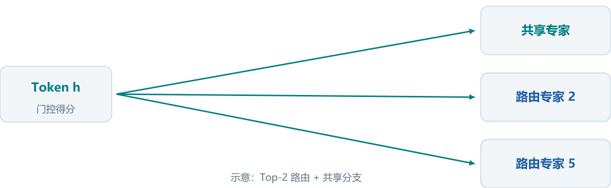
这张图回答什么
说明一个token如何同时走共享分支与少数路由分支，理解稀疏激活的实际含义。
坐标、图例与方向
无数值坐标；箭头由左侧token流向右侧专家。图上Top-2是教学示意，标号2和5是被选中的专家身份。
按这个顺序看
先看router给哪些专家打分，再区分始终参与的共享专家与按token选择的路由专家，最后想象将各分支输出按门控权重合并。
代入一个例子
教学例子选2个路由专家；V3真实配置选8个。总专家增多增加参数容量，Top-K增大增加每token执行量，两种修改的成本不同。
能得出什么，边界在哪
箭头表示token激活数据流，不表示一定跨机器；专家物理放在哪张卡、路由是否均衡，决定真正通信成本。
路由和加权是两件事。V3 每 MoE 层有 256 个路由专家、1 个共享专家，选 8 个路由专家；前 3 层是 dense FFN。选择按 s_i+b_i 排序，组合权重仍由原始 s_i 归一化。过载减偏置、欠载增偏置；仍保留极小的序列级平衡损失。
| 量 | 决定什么 | 应观察的指标 |
|---|---|---|
| 总参数 / 总专家数 | 权重容量与专家分布 | 各设备权重、副本、溢出需求 |
| 每 token 选中专家 | 计算量及通信扇出 | token-expert 分配数、每专家 token 数 |
| 路由不均衡 | 慢设备与等待时间 | max/mean 专家负载、分位数 step time |
| EP 拓扑与 token 分发 | 跨卡/跨节点数据流 | dispatch/combine 时间、重叠程度 |
整理者推导：忽略偏置的 SwiGLU。V3 取 d=7168、m=2048、58 个 MoE 层，可得专家总参数约 656.46B；每 token 的专家激活约 22.99B。均不是全模型总量。
复现提示：上式为教学简化。V3官方671B参考配置还包含route_scale=2.5，必须与选择偏置、归一化一起核对；示意公式不是逐行可运行的参考实现。
03 / 模型架构 原 PDF · 08
MTP：训练目标如何连接推测解码
多 token 预测是训练目标与预测模块设计；线上加速还取决于验证和调度。
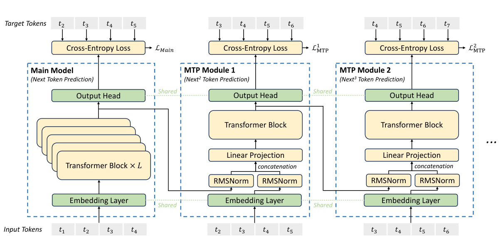
这张图回答什么
说明多token预测怎样通过串接模块形成训练目标，以及它与普通下一token预测的对齐关系。
坐标、图例与方向
横向是预测深度，而不是训练时间；每列自下向上计算。灰格是token序列，绿色虚线表示共享embedding和输出头，顶部为各深度交叉熵损失。
按这个顺序看
先看左列输入t1时目标是t2；再看中列，它结合上一深度hidden与移位后的真实token embedding，目标进一步移至t3；右列继续移一位。逐项检查输入和标签，才能看清有没有泄漏未来信息。
代入一个例子
图画了两个附加模块以说明一般情况，V3实际使用一个MTP模块。训练时的真实token输入属于teacher forcing；在线生成时必须通过draft/target验证，不能直接拿训练图充当解码算法。
能得出什么，边界在哪
MTP辅助目标、draft生成、target验证是三个环节。主模型推理可以丢弃MTP，因此有MTP训练不等于所有部署都会获得加速。
学习用的概括式；各深度有效 token 范围、归一化和系数以论文/实现为准。
下一 token 主目标之外，附加模块学习更远位置的预测。训练时需检查 token 对齐、标签移位、可见上下文，以及共享 embedding/output head 的梯度如何累积。
图示为一般深度 D，V3 实际 D=1。模块逐深度串接，将上一深度 hidden 与移位后的真实 token embedding 拼接，再预测下一个位置；并非相互独立的多个预测头。主模型推理可丢弃 MTP。
| 训练侧问题 | 推理侧问题 |
|---|---|
| 新增目标是否改善主模型？需要同预算消融。 | draft token 是否足够便宜？接受率如何随位置下降？ |
| 辅助模块与骨干如何共享参数和状态？ | target 验证能否复用计算？拒绝后如何回退？ |
| 额外 FLOPs、激活和训练不稳定性有多大？ | 端到端收益是否覆盖 draft、验证、缓存和调度成本？ |
DeepSpec 提供专门的 draft 训练与评估流程，适合研究“训练损失下降”能否转化为“有效输出 token 增加”。MTP、DSpark 与其他 draft 方法要分别按实现比较。
03 / 模型架构 原 PDF · 09
从 DSA 到 CSA：先减少读取，再压缩序列
稀疏主注意力的成本，还要加上索引、选择、gather 与局部注意力。
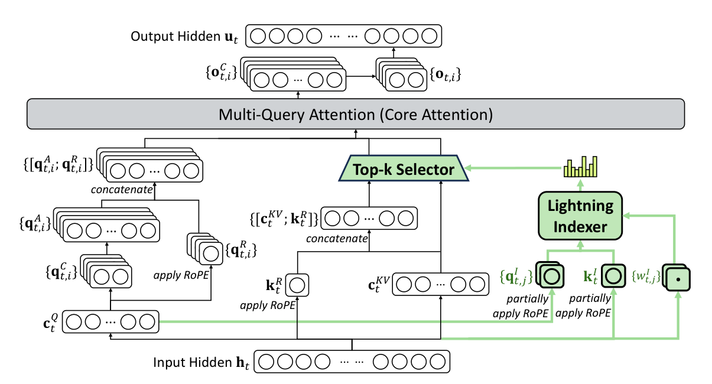
这张图回答什么
说明DSA把历史位置的筛选与主注意力的精细计算分开，从而减少昂贵主注意力的读取范围。
坐标、图例与方向
计算路径图没有数值轴。沿当前query相关分支找到轻量indexer，再沿Top-K索引进入主注意力；箭头是张量依赖，不是耗时比例。
按这个顺序看
先区分indexer打分和主attention打分；再追踪哪些历史位置入选、相应KV如何gather；最后把indexer、Top-K、gather和主attention一起记入成本。
代入一个例子
如果历史有10万个位置，主attention只读取选中的一小部分，这不代表indexer只看同样少的位置。节省主路径的同时仍可能保留随历史长度增长的扫描。
能得出什么，边界在哪
稀疏选择改变模型计算，需要对应训练。只测稀疏attention kernel的速度不能代表包含选择和通信的整层加速。
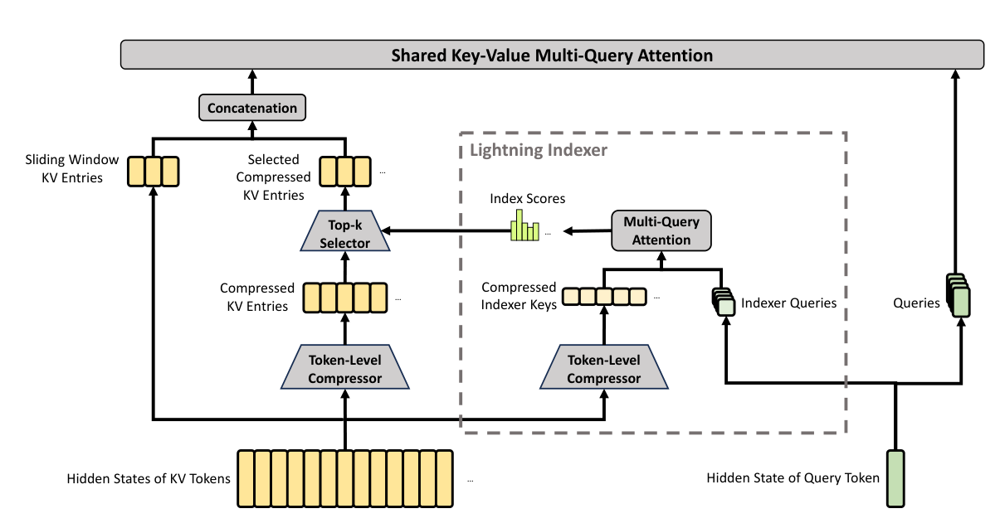
这张图回答什么
在DSA的基础上理解另一种压缩方向：先沿序列维把多个历史位置压成较少条目，再做稀疏读取，并用局部窗口保留近处细节。
坐标、图例与方向
无数值坐标。读图要分开原始token位置、压缩KV条目和局部SWA分支；箭头汇合表示这些信息共同参与输出，不表示所有分支执行相同算子。
按这个顺序看
先找压缩器的输入输出，再看压缩条目上的选择，最后追踪局部窗口如何补充信息。把压缩成本、索引成本、读取成本分开算。
代入一个例子
V4的CSA以4倍序列压缩配合Top-K；HCA使用128倍压缩并读取全部压缩条目。一个减少候选数后再选，另一个更强压缩后全读，不能只看压缩倍数比高低。
能得出什么，边界在哪
这与MLA在特征维压缩KV不同；序列压缩可能损失细节，须通过训练与长上下文质量评估验证。
| 设计 | 状态/访问的变化 | 仍需支付的成本 |
|---|---|---|
| DSA | 主 attention 只访问选中的位置 | indexer 扫描、Top-K、KV gather |
| CSA / HCA | 沿序列维度形成较少 KV 条目 | 压缩器、信息损失、局部细节保留 |
| CSA2 | 进一步跨层共享 KV 与索引结果 | 依赖管理、首层完整扫描与一致性 |
学习要点：压缩注意力通常改变模型本身，需要训练适配；它与 MLA 的代数重排属于不同性质的优化。分别评估质量损失、缓存收益和实际关键路径耗时。
V4 的典型 CSA 压缩率为 4，再做 Top-K；HCA 用更重的 128 倍压缩，读取全部重压缩条目，不做同样的稀疏选择。二者都保留局部 SWA；DSA 的主注意力稀疏也不免除 indexer 扫描历史的成本。
V4 Flash与Pro应分开读：CSA Top-K分别为512和1024，起始层布局也不同。概括机制可以共用一张图，具体成本与配置需要回到各自模型表。
03 / 模型架构 原 PDF · 10
V4.1：用 CED 重组长上下文计算
20 层因果编码器 + 20 层解码器；仍按因果方式生成文本。
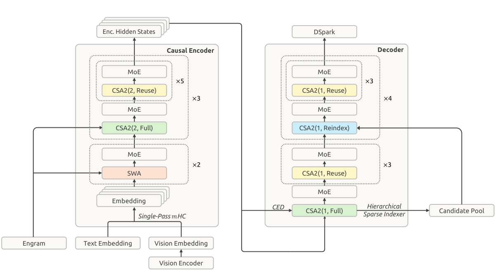
这张图回答什么
看清V4.1如何用因果编码器和解码器重组输入处理、历史状态复用和后续生成。
坐标、图例与方向
无数值轴。左为Causal Encoder，右为Decoder；箭头主要从下向上。绿色Full创建主要状态，蓝色Reindex重新选择，黄色Reuse复用；虚线括号旁×N表示重复次数。
按这个顺序看
从Text/Vision Embedding进入左边，沿SWA与CSA2块到Enc. Hidden States；再追踪CED连线到右侧Decoder的global状态来源，最后看候选池如何供后层Reindex使用。数清重复块，核对两边各20层。
代入一个例子
报告口径下prefill激活约8B、decode激活约16B，是阶段执行路径的口径；不表示只存这部分权重。因果编码器也不等于能偷看未来的双向编码器。
能得出什么，边界在哪
本图对应V4.1基座报告；1017是后续小更新。网页将报告与固定revision参考实现分开标注，不能把最新main当作历史快照。
CED 将解码器的 global KV 投影来源组织到编码器最终隐状态，使输入处理和后续生成可以采用不同计算路径。理解它时，应画出 prefill 与 decode 各自实际执行的层及缓存依赖，不能套用传统双向 encoder-decoder 的假设。
| 官方模型口径 | 含义 |
|---|---|
| 552B backbone + 196B Engram | 骨干参数与条件记忆单列；不能与 checkpoint 标注总量混为一谈 |
| Prefill 激活 8B / Decode 激活 16B | 阶段不同，活跃计算不同；不等于只需加载这些权重 |
| 40 层；384 路由专家 + 1 共享专家 | 每 MoE 层选择 6 个路由专家；其它模块单独核算 |
03 / 模型架构 原 PDF · 11
CSA2、mHC 与条件记忆
新架构需要同时理解跨层状态、稀疏索引和残差流。
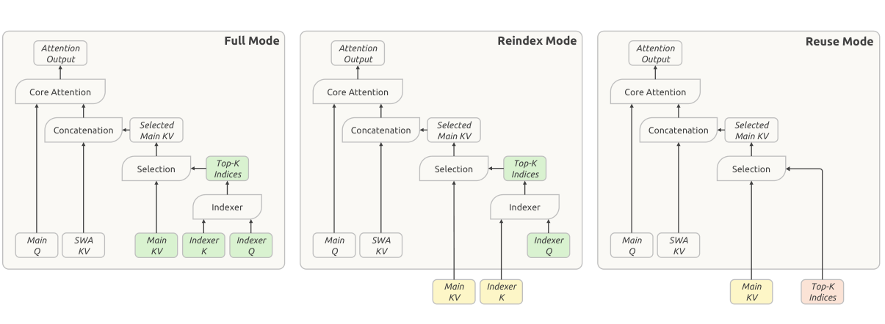
这张图回答什么
对照Full、Reindex、Reuse三种模式，理解省下的究竟是KV投影、索引计算，还是两者。
坐标、图例与方向
横向三栏为模式，纵向自下向上是数据流；没有数值轴。Full栏绿色是本层新算状态，后两栏底部输入框表示从较早层复用的状态，具体含义以框中文字为准。
按这个顺序看
先对比Main KV：谁生产、谁复用；再对比Indexer Q/K和Top-K：谁重新算、谁复用选择。最后确认三种模式都有本层Main Q与SWA KV，Reuse并不是整层不计算。
代入一个例子
Full算出历史状态及候选后，后面的Reindex可在候选池中重新选Top-512，Reuse继续用既有索引。改变一次Full的缓存布局，会影响所有依赖它的后层。
能得出什么，边界在哪
后层索引范围受限，不代表首个Full层不扫描完整历史。复用也引入缓存所有权与生命周期依赖，不能只当成自由替换的算子。
| 模块 | 关键状态 | 必须读懂的问题 |
|---|---|---|
| CSA2 Full | 计算本层 KV、索引相关状态 | 哪些层创建可被后层复用的缓存？ |
| CSA2 Reindex | 复用 KV，重新执行稀疏选择 | 候选池如何限制后续索引工作？ |
| CSA2 Reuse | 复用已有 KV 与 Top-K 结果 | 跨层依赖如何约束并行和缓存生命周期？ |
所有模式仍算本层 Q 与 SWA KV。Decoder 首个 Full 层扫描完整历史，最多形成 2048×8=16,384 个候选位置；后续 Reindex 在候选池中选 Top-512。后层成本有界不代表首层免扫描。
mHC 的简化结构式：A 聚合残差流作为层输入，B 混合残差，C 将层输出分配回残差流；Single-Pass 再调整系数产生与使用的时序。
CSA2的Full/Reindex/Reuse是各层采用的模式，而不是同一层随一次请求先后切换的三个阶段。括号中的1/2表示序列压缩率；Reuse复用KV和索引，仍重新计算本层attention输出。40个主干层和3个draft层也要分开统计。
04 / 数据工程 原 PDF · 12
数据资产：先核验能拿到什么
训练样本、评估样本、生成配方和数据处理工具是四类资产。
| 资产 | 已知公开证据 | 使用时应记录 |
|---|---|---|
| 通用预训练语料 | 报告披露规模与构建原则；未核验全量原始集合可下载 | 来源、版本、去重与采样口径 |
| R1 SFT / RL 数据 | 报告有配方、统计与样例；v2 的完整数据地址为 xxx | 不能用第三方再生成集冒充官方原始集 |
| Prover 专项数据 | 官方 DeepSeek-Prover-V1 数据页 | 具体文件、样本量、任务与使用许可 |
| ProverBench | 官方评估数据 | 独立保留；不作为训练数据回流 |
| DeepSpec 数据流程 | 公开 prompts 切分、目标模型重生成、target cache 构建 | 数据源与生成器版本、采样设置、缓存格式 |
建议的数据契约（本报告归纳）
文档：source、timestamp、dedup_cluster、quality_score、token_count。
SFT：prompt、trajectory、generator_version、filter_reason。
RL 任务：环境快照、验证器版本、参考答案或执行契约、难度历史。
Rollout：token、行为策略版本、logprob、reward、停止/截断原因。
04 / 数据工程 原 PDF · 13
预训练数据：从采集到可归因实验
数据质量必须通过固定预算的训练和 held-out 评估来验证。
这张图回答什么
把数据工程变成可追溯的处理链，区分原始采集量与最终进入训练的token量。
坐标、图例与方向
无数值坐标；从左向右依次是采集解析、清洗去重、混合打包、训练评估。箭头表示转换顺序，不说明各阶段保留比例。
按这个顺序看
为每一箭头记录输入版本、处理规则和输出身份，再核对去重粒度、质量阈值与采样比例。最后检查评估数据是否在前面某步混回训练。
代入一个例子
同样训练100B tokens，重复采样10B独立内容和使用100B独立内容不是同一数据覆盖；样本数量、独立tokens、累计训练tokens应分别报告。
能得出什么，边界在哪
流程正确不能证明数据有价值；需要固定模型、token预算和评估口径，逐项做去重、过滤、混合消融。
| 案例 | 论文/官方披露 | 可迁移的方法 |
|---|---|---|
| DeepSeekMath | 种子语料、分类召回、域扩种迭代；约 120B 数学语料 tokens；Base 继续训练总量为 500B，另含其他领域数据 | 把召回分数与真正训练价值分开；做域外 held-out 评估 |
| DeepSeek-Coder | 利用仓库结构、依赖关系、去重与质量筛选 | 以项目和依赖上下文为单位组织数据，测跨仓库泛化 |
| V3 | 14.8T tokens；提高数学/代码覆盖，优化去冗余与打包 | 数据配比与文档边界策略需要版本化 |
| V4.1 | 45T 多模态 tokens；纯文本:多模态约 7:1 | 多模态质量、重复率与信息增益需共同审计 |
打包不是纯 IO 优化。拼接顺序、文档边界、position IDs、attention mask 和 loss mask 会改变可见条件与学习目标。V3 披露的 packing 没有采用跨样本 attention masking，这不应被误写成通用最佳实践。
VERSIONED RECIPE / 网页补充
V3 与 V4.1 的预训练配方，分别看
这里的 recipe 指模型更新规则与训练进程。学习率决定每次参数更新的尺度，batch决定一次更新聚合多少数据，上下文决定一次能学习多长依赖。它们与总训练量共同作用，单个数值不能说明模型一定更强。
| 设置与含义 | V3 · 报告v2 | V4.1-Flash · 报告v1 |
|---|---|---|
| 累计训练 tokens 训练期间消费多少token，含重复采样 | 14.8T，之后另做长上下文扩展。 | 45T多模态数据；整合语料纯文本:多模态约7:1，不能解释为图片数量比。 |
| 优化器 怎样根据梯度更新参数 | AdamW。 | 线性矩阵用Muon；RMSNorm及非矩阵参数用AdamW；embedding与prediction head用Sinkhorn-balanced更新。 |
| 学习率前段 先稳定启动，再维持较大的更新尺度 | 前2000 steps从0线性升至2.2×10⁻⁴；保持至累计10T tokens。 | 前2000 steps warmup；随后保持2.6×10⁻⁴至累计28T。 |
| 学习率后段 逐步减小更新幅度以收敛 | 再用4.3T做cosine decay，降至2.2×10⁻⁵；最后500B中先333B保持该值，再167B用7.3×10⁻⁶。 | 28T–40T做cosine decay至2.6×10⁻⁵；40T–45T保持该值。 |
| 每次更新的batch 先核对是序列条数还是token数 | 前469B tokens内，原文batch size从3072增至15360，之后固定。这两个数不是tokens/batch。 | 全程固定100.6M tokens/batch。 |
| 上下文进程 长依赖何时进入训练 | 预训练4K；随后4K→32K→128K，两段各1000steps，batch分别1920与480，LR均7.3×10⁻⁶。 | 从64K sparse attention起训，没有dense attention warmup；累计34T tokens时扩到1M，仍在45T总进程内。 |
展开优化器超参及口径边界
V3 AdamW：β₁=0.9、β₂=0.95、weight decay=0.1，gradient clipping norm=1.0。V4.1 AdamW：β₁=0.9、β₂=0.95、ε=10⁻²⁰、weight decay=0.1；Muon momentum=0.95、weight decay=0.1，更新矩阵RMS缩放到0.18；Sinkhorn-balanced使用相同momentum与LR修正因子，K=11、τ=10⁻³、ε=10⁻²⁰；Engram LR另乘5。优化器中的K=11与mHC架构的20次Sinkhorn-Knopp迭代属于不同模块。未披露项不能推定为关闭；这些公开设置也不等于内部完整训练代码和全部数据已发布。
来源：V3 §4.2–4.3 ↗ · V4.1 §4.2.2 ↗。K/M/T沿用原论文记号；本表只讨论预训练，后训练的SFT/RL/OPD另看后续章节。
04 / 数据工程 原 PDF · 14
R1：生成与筛选形成训练数据闭环
Cold-start、RL、拒绝采样和 SFT 分别解决不同问题。
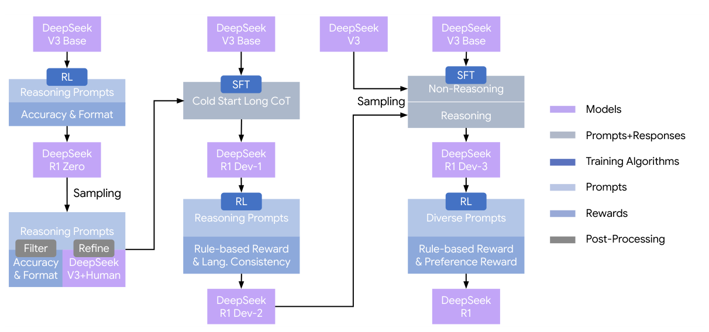
这张图回答什么
区分R1-Zero、完整R1与蒸馏学生的训练路径，尤其看清新SFT检查点从哪个底座初始化。
坐标、图例与方向
流程图无数值坐标；紫框是模型检查点，蓝色小标签是SFT/RL，灰蓝框是数据，灰色Filter/Refine为后处理。框大小不代表参数量或训练时间；箭头需区分模型权重流和采样数据流。
按这个顺序看
先找共同的V3-Base；跟随R1-Zero的直接RL路径，再看cold-start→Dev1→reasoning RL→Dev2。沿Dev2右侧Sampling追到推理数据框；另沿右上V3-Base的竖线追到SFT，两条箭头分别是数据来源与权重初始化。
代入一个例子
报告的约800K SFT样本由约600K推理与200K非推理样本组成，用于从V3-Base训练新的Dev3 SFT检查点；不能默认把reasoning RL权重继续SFT。
能得出什么，边界在哪
R1-Distill学生使用Qwen/Llama等底座，结构跟学生底座走；它不是按比例缩小的V3。原图的流程概括也不能补全未公开的原始数据。
R1-Zero 从已经预训练的 V3-Base 直接开展 RL；R1 加入少量 cold-start 示范，之后进行推理 RL，再采样和筛选轨迹用于 SFT，最终扩展到更广场景的 RL。小模型蒸馏使用另外的学生底座。
| 阶段 | 数据形式 | 重点审计 |
|---|---|---|
| Cold-start SFT | 较高质量的示范轨迹 | 格式、语言、可读性与监督范围 |
| Reasoning RL | 任务 + 策略生成 + 可验证奖励 | 可解性、奖励可靠性、组内方差 |
| 拒绝采样 → SFT | 生成多个候选并保留合格轨迹 | 过滤造成的分布偏差与覆盖缺失 |
| 多场景 RL | 推理及一般任务的混合 | 能力、偏好和安全奖励的冲突 |
报告披露的约 800K SFT 配方包含约 600K 推理与 200K 非推理样本。这些数据用于从 V3-Base 训练新的 SFT 检查点（Dev3），不能默认理解为接续推理 RL 检查点连续 SFT。复现时要对齐初始化及生成—筛选记录。
05 / 训练算法 原 PDF · 15
GRPO：把公式落到有效学习信号
以下是用于分析的概括形式，具体概率比粒度与归一化必须对照实现。
ρ 为当前策略与行为策略的概率比；δ 为数值稳定项，ε 为裁剪阈值。这里省略组、序列和 token 求和，不作为某一实现的完整目标函数。
三种策略角色：learner 是待更新策略；behavior/old 生成当前训练样本；reference 用于某些 KL 约束。三个角色可以共享初始化，但语义不同，不能用同一个“旧模型”概括。
| 奖励组（自设例子） | 结果奖励的相对信号 | 解释 |
|---|---|---|
| [1, 1, 0, 0] | 约 [+1,+1,−1,−1] | 有成败区分；实际 std 定义需一致 |
| [1, 1, 1, 1] | 全零 | 没有相对奖励区分；KL 等项仍可有梯度 |
| [0, 0, 0, 0] | 全零 | 可能过难、验证器出错，或探索覆盖不足 |
整理者推导：独立同分布二元结果假设下，G 个样本中至少包含一成一败的概率。实际轨迹存在相关性，不能当生产预测。
例如 p=0.5、G=8 时约 99.2%；p=0.001 时约 0.8%。这说明任务难度、采样数和奖励设计共同决定有效数据比例。优先记录混合奖励组比例、截断率、长度和独立验证质量。
TRY IT / 组相对奖励
四条轨迹，为什么“全对”也没有组内区分？
点击切换0/1奖励；优势采用总体标准差与极小稳定项。这里只演示结果奖励项，不代表完整GRPO损失。
优势：[+1.00, +1.00, −1.00, −1.00]
有成有败时，结果奖励提供相对区分。
05 / 训练算法 原 PDF · 16
V4.1：任务、环境与 OPD
V4.1 报告把后训练重点放在可验证任务及环境的规模化建设。
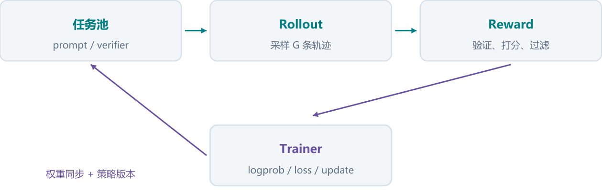
这张图回答什么
把任务、采样、验证和更新连成闭环，解释训练样本如何由当前策略和环境共同产生。
坐标、图例与方向
无数值轴；上排从任务池到rollout再到reward，下方trainer接收可学习信号，并把新权重同步回生成端。箭头表示依赖，不说明吞吐或同步频率。
按这个顺序看
先问任务有没有可执行环境和可靠验证器；再问G条轨迹由哪个版本的策略生成；最后追踪奖励、行为logprob与loss mask如何送进trainer，权重何时更新。
代入一个例子
一道题采样8条不等于8道独立题。若8条全部失败，二元组相对奖励没有区分度；需要检查难度、探索与验证器，而不是只增加生成token。
能得出什么，边界在哪
这是整理者归纳图，不是DeepSeek内部系统原图。OPD还需明确学生状态上的教师反馈；异步RL还需记录陈旧度，单个闭环图不能表达全部实现。
V4.1 报告沿用 SFT → RL → on-policy distillation（OPD）路线。学习单位从单条问答扩展为任务描述、环境状态和验证系统；代码 Agent、工具调用等任务需要审计多步行为与最终产物。
| 角色 | 负责什么 | 容易混淆的地方 |
|---|---|---|
| 任务生成与环境 | 产生可执行、可复核的挑战 | 题面多样不代表环境或解法多样 |
| Verifier / Reward | 判断结果或轨迹是否达标 | 测试覆盖不足会使投机行为获得高分 |
| 学生 rollout | 产生当前学生实际到达的状态 | 不是固定保存的教师答案分布 |
| 教师反馈 / OPD | 在学生状态上提供学习信号 | 需核对 KL 方向、温度、词表及 loss mask |
图为本报告归纳的任务—策略—验证闭环，不是 DeepSeek 内部系统原图。环境和验证器也应进行版本控制、回归测试与数据污染检查。
06 / 训练系统 原 PDF · 17
训练框架：沿一次更新拆开系统
框架负责把目标函数变成正确、稳定且高效的跨设备执行。
这张图回答什么
说明一次训练更新既包含数学目标，也包含参数状态、并行执行和数据供给；正确性要从每一层往下落实。
坐标、图例与方向
这是层次关系图，无数值坐标。各色块和连线表示职责与依赖，面积不表示耗时或显存占比。
按这个顺序看
从样本、标签和mask开始，算出loss；再追踪反向、梯度聚合和优化器更新；随后检查PP/EP/DP分组如何持有状态、安排通信，最后用trace核验执行。
代入一个例子
Adam的FP32主参数及两份动量通常约12 bytes/参数，但这不包含低精度权重、梯度、激活与缓冲。把12乘总参数只能得到账本的一部分。
能得出什么，边界在哪
V3公开的是16路PP、64路EP和ZeRO-1 DP的具体设计。不同算子的分组可重叠，不能把这些数字直接相乘当总GPU数。
| 层次 | 主要状态/依赖 | 验证方式 |
|---|---|---|
| 目标与样本 | token 对齐、标签、mask、权重 | 手算小批次 loss 与梯度 |
| 模型与优化器 | 参数、梯度、主参数/动量 | 单卡/多卡更新等价性与断点恢复 |
| 并行分组 | PP、EP、DP 的 rank 映射 | 逐组清点持有参数与通信对象 |
| 执行与数值 | stream/event、精度、布局 | 数值对照 + 时间线 profile |
V3 的 16 路 PP、64 路 EP、ZeRO-1 DP 是具体集群设计。EP 的专家归属与 attention 的数据副本映射不同，不能简单把所有并行缩写相乘来推断 world size 或权重副本。
WALK THROUGH / 参数与 TOKEN 分别怎么走
FSDP + EP 可以同时用：一个4卡例子
FSDP把同组参数分片保存，计算当前层前收集所需权重；EP把不同专家放到不同设备，计算时把token激活送到专家那里。下面用2路EP与2路专家FSDP解释组合方法，普通共享层另按自己的FSDP组处理。这是教学拓扑，DeepSeek-V3报告披露的是ZeRO-1 DP。
两行分别是EP通信组；同一列是同一专家集合的FSDP组。选中多个专家时，同一个token可能投递多份激活，最后按路由权重合并。分组、收集和释放时机取决于具体实现。
FSDP教学示例的概念参考：[FSDP] PyTorch FSDP 官方说明（教学并行示例） ↗；它与本章V3实际并行配置分开标注。
06 / 训练系统 原 PDF · 18
DualPipe：优化的是关键路径
减少气泡需要付出状态驻留、实现复杂度与调度约束。
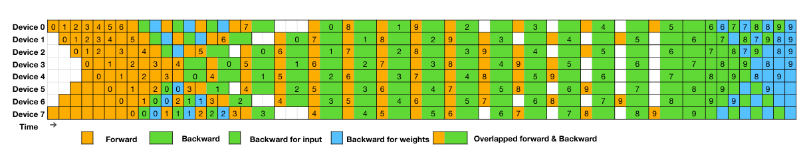
这张图回答什么
看流水线如何安排前向、反向和通信以减少设备等待，理解优化目标是训练步的关键路径。
坐标、图例与方向
横轴Time向右，但没有秒刻度；纵轴为Device 0—7。黄格是Forward，绿格是Backward/输入梯度，蓝格是权重梯度；黄绿组合表示重叠；数字是微批标识，白格是空闲。
按这个顺序看
选一个微批编号，跨设备跟踪其前向与反向依赖；再沿单个设备行看哪些时隙被填满。比较开头灌入、中间稳态、末尾排空，识别气泡与被重叠的工作。
代入一个例子
如果一次通信原来让设备等10毫秒，把它放进本来就要进行的计算窗口可能缩短step；若通信与计算争同一资源而使计算变慢，实际收益会小于隐藏掉的通信时间。
能得出什么，边界在哪
格子不是等比例的真实kernel trace，图也不是任何网络都能直接套用的排程。重叠需要算子、缓冲生命周期、stream/event与显存预算共同支持。
将前向、输入梯度和权重梯度的计算安排到合适时段，使计算、EP 通信和 PP 通信产生有效重叠。调度器的依赖顺序只是起点，真实模块还需实现 overlapped_forward_backward 等接口。
整理者的分析账本，不表示各项能从孤立微基准直接相加；重叠会改变资源竞争。
| 检查点 | 为什么重要 | 应交付的证据 |
|---|---|---|
| 微批依赖与生命周期 | 不正确的重排可能使用旧权重或提前释放激活 | 时序图、依赖与显存曲线 |
| EP / PP 重叠 | 通信与计算会竞争 SM 和带宽 | 无重叠/有重叠的端到端对照 |
| 参数与激活驻留 | 更少气泡不一定更少显存 | 峰值内存与最大 microbatch |
| 偏斜与长尾 | 平均耗时会掩盖慢 rank | 各 rank 分位数与同步等待 |
06 / 训练系统 原 PDF · 19
MoE 通信与低精度：接口必须对齐
通信库、计算库和模型共同决定结果与性能。
一个 MoE 层的前向：router/Top-K → dispatch → expert grouped GEMM → combine。反向还要追踪相应梯度通信、路由权重梯度及 padding 的处理。
| 模块 | 输入/输出契约 | 重点验证 |
|---|---|---|
| Dispatch | token、专家 ID、权重、目的 rank | 排序、重复投递、空专家与越界 |
| Grouped GEMM | 不同专家的可变 token 数与权重布局 | 对齐、scale、量化和累加精度 |
| Combine | 专家输出与原 token 的映射 | 加权位置、累加顺序和数值误差 |
| Backward | 反向通信、激活与梯度布局 | 单卡稠密参考与分布式梯度对照 |
FP8/FP4 不是全模型统一 dtype。需要逐项记录矩阵乘输入、scale 粒度、累加、残差、归一化、梯度和优化器状态。权重低比特与训练全链低精度是不同的命题。
基础相对误差指标；仍需检查极值、逐层误差、梯度偏差和训练曲线。
建议 profile 四种条件：均匀/偏斜路由 × 关闭/开启重叠。微基准很快而模型变慢时，检查带宽、SM 竞争与同步等待，而不是立即归因于“模型层太多”。
06 / 训练系统 原 PDF · 20
异步 RL：生成吞吐会改变训练分布
推理引擎进入训练正确性的边界，需要记录策略与路由状态。
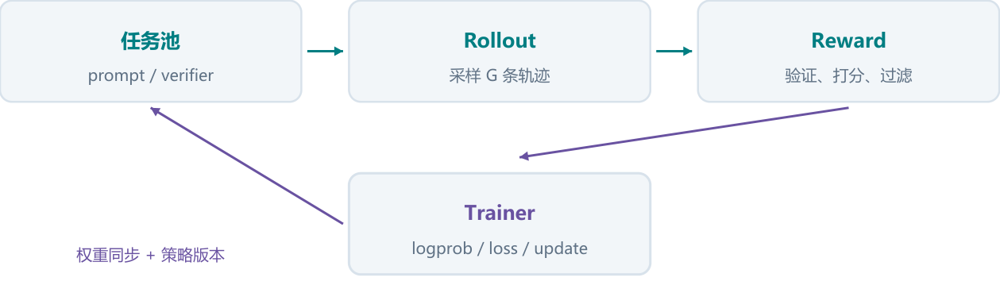
这张图回答什么
把任务、采样、验证和更新连成闭环，解释训练样本如何由当前策略和环境共同产生。
坐标、图例与方向
无数值轴；上排从任务池到rollout再到reward，下方trainer接收可学习信号，并把新权重同步回生成端。箭头表示依赖，不说明吞吐或同步频率。
按这个顺序看
先问任务有没有可执行环境和可靠验证器；再问G条轨迹由哪个版本的策略生成；最后追踪奖励、行为logprob与loss mask如何送进trainer，权重何时更新。
代入一个例子
一道题采样8条不等于8道独立题。若8条全部失败，二元组相对奖励没有区分度；需要检查难度、探索与验证器，而不是只增加生成token。
能得出什么，边界在哪
这是整理者归纳图，不是DeepSeek内部系统原图。OPD还需明确学生状态上的教师反馈；异步RL还需记录陈旧度，单个闭环图不能表达全部实现。
V4.1 报告披露按样本派发、训练与 rollout 分时复用设备、token 边界中断/恢复，以及对过旧 token 进行 loss mask 等设计。跨 checkpoint 轨迹训练时拼接各 rollout 片段保存的专家路由，同时处理行为策略陈旧度。
| 现象 | 需要保存/测量 | 独立验证问题 |
|---|---|---|
| 短轨迹先完成 | 每批长度与任务分布 | 早返回是否改变训练覆盖？ |
| 旧策略样本 | token 级策略版本、behavior logprob | 陈旧度与裁剪/mask 损失有多大？ |
| MoE 路由变化 | 实际采样的专家分配 | routing replay 修复哪类路径不一致？ |
| 中断与恢复 | 缓存状态、停止边界、重算时间 | 更频繁更新的质量收益能否覆盖切换成本？ |
图为整理者归纳。路由重放不自动消除 off-policy 偏差、logprob 数值差异或长度偏差；三类问题应分别做消融。
07 / 推理系统 原 PDF · 21
从参考模型到生产服务
同一套数学前向，可以被组织成完全不同的执行和服务系统。
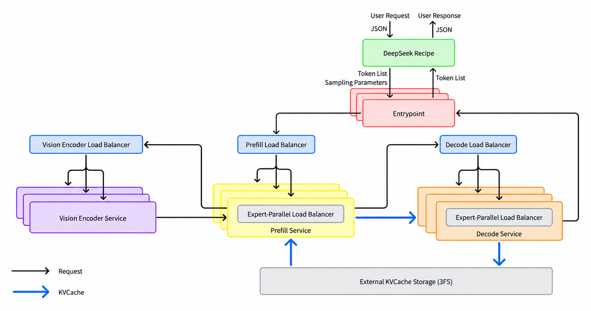
这张图回答什么
把模型前向、离线引擎与完整生产服务分开，看一次请求和KV状态在系统中分别怎么走。
坐标、图例与方向
系统拓扑图无数值轴。黑箭头是请求流，蓝箭头是KV传输；VE处理视觉，P处理prefill，D处理decode。方框的位置表达职责与连接，不是GPU数量。
按这个顺序看
从请求入口沿黑线追踪编码、prefill、decode和响应，再沿蓝线追踪状态的产生、存放、传输和加载。每次跨组件都问版本、所有权、失败恢复与路由依据。
代入一个例子
相同前缀再次请求时，外部缓存可能减少重复prefill；但必须匹配模型版本、位置和协议，也要付出查找及传输成本。命中率和端到端TTFT需一起看。
能得出什么，边界在哪
这是官方生产设计图，当前开源离线核心不等于所有方框均已完整交付。Q&A也明确decode不做KV offload，主存层不能解读成任意溢出缓存。
| 层级 | 解决的问题 | 当前阅读对象 |
|---|---|---|
| 模型前向 | 输入如何变成 logits | 参考 model.py 与优化模型实现 |
| 推理引擎 | 拼批、缓存、采样和设备执行 | DeepInfer 离线核心 |
| 服务集群 | 入口、VE/P/D、外部缓存与负载均衡 | 官方设计文档；部分工程需自行补齐 |
图中黑箭头是请求流，蓝箭头是 KV 状态传输。拆分视觉、prefill 和 decode，可以分别调配资源，但也会引入状态传输、路由、失败恢复与一致性问题。
07 / 推理系统 原 PDF · 22
源码调用链：一次设备步如何发生
从入口顺着状态变更读，避免只看模型 forward。
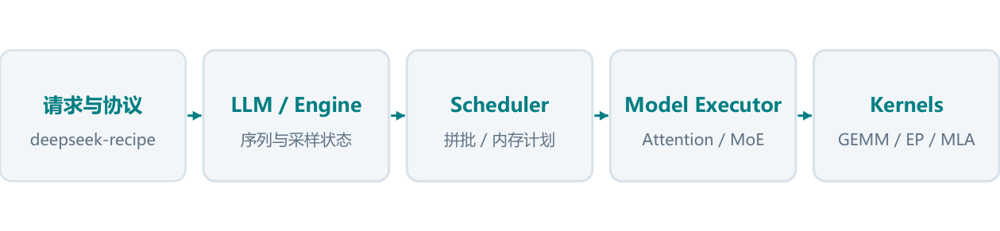
这张图回答什么
按一次设备步的状态变化读源码，明确入口、调度、模型执行和结果回收之间的职责。
坐标、图例与方向
无数值坐标；按图中的调用箭头读。框表示软件模块而不是不同GPU，箭头也不意味着每一步都同步阻塞。
按这个顺序看
先给请求分配request_id，再跟踪engine如何调度、worker如何执行模型和采样、输出如何更新请求。逐轮记录KV块和state slot分配、使用与释放。
代入一个例子
CPU准备下一批时，GPU可能还在算上一批；新token和停止条件尚不可用。把上一轮结果误当成当前轮，会造成缓存或输出状态错位。
能得出什么，边界在哪
流程图刻意简化异步细节。prefill、普通decode、推测解码被拒绝三种情况都需要单独画时间线核对。
| 位置 | 核心职责 | 阅读问题 |
|---|---|---|
| entrypoints/llm.py | generate / add_request / 推进循环 | 请求何时加入，何时视为完成？ |
| engine/llm_engine.py | 调度、worker 执行、输出处理 | step 的输入状态属于哪一轮？ |
| csrc/engine/scheduler.hpp | 序列、chunk 与设备内存计划 | 抢占、回收和新 token 的先后关系？ |
| worker/model_runner.py | 图 replay、模型与 sampler 执行 | 何时走 CUDA Graph，何时直接执行？ |
| worker/cache_engine.py | paged block 与 state slot | 哪个层拥有缓存，哪些层共享？ |
| models/v4_modules/ | attention、MoE、YoCo 等模块 | 参考计算与融合路径怎样对应？ |
异步调度：设备执行当前步时，CPU 准备后续批次。结果尚未返回时，不能假设新 token、停止条件或 draft confidence 已可用。代码里的双缓冲、事件与元数据生命周期比循环表面顺序更重要。
07 / 推理系统 原 PDF · 23
Prefill 与 Decode：使用不同成本模型
瓶颈由上下文、并发、稀疏度、验证长度和拓扑共同决定。
这张图回答什么
解释prefill一次处理输入与decode逐轮生成的不同成本，避免用同一吞吐数字概括两阶段。
坐标、图例与方向
这是一张阶段示意图，没有标定时间轴；方框宽度不表示实际耗时。按输入处理→状态建立→逐轮生成阅读。
按这个顺序看
先看输入token在哪批量处理，再看每轮输出依赖哪些历史状态。接着把排队、缓存加载、prefill和decode分别计时，映射到首token时间TTFT与后续输出间隔。
代入一个例子
某系统prefill更快，可能让首字更早出现，但若decode每token间隔不变，长回答的总时间未必按同样比例下降；两阶段要分别解释。
能得出什么，边界在哪
prefill不保证永远算力受限，decode也不保证永远带宽受限；并发、稀疏索引、长上下文和通信都可能改变瓶颈。
诊断性分解；阶段可能重叠，正式测量以端到端时间线为准。
| 阶段/指标 | 含义 | 容易遗漏 |
|---|---|---|
| Prefill | 处理输入段，建立所需状态 | 前缀命中、重放、图像编码、chunk 大小 |
| Decode | 逐轮产生新输出 | 并发、draft/verify、长上下文索引 |
| TTFT | 请求到首个输出的墙钟时间 | 排队、缓存加载和首轮调度 |
| TPOT / TBT | 生成阶段的每 token/间隔延迟 | 分位数、突发输出与批内差异 |
| 有效吞吐 | 真实完成输出量 / 时间 | 完成率、延迟约束与正确性 |
07 / 推理系统 原 PDF · 24
KV 缓存：容量、复用与恢复
区分 global KV、局部 SWA 状态、indexer 状态及分页元数据。
这张图回答什么
区分缓存容量、跨层共享、跨请求复用和状态恢复，避免把几种节省方式相加却重复计算。
坐标、图例与方向
这是一张缓存层次示意图，无数值轴。按状态存放位置及流转箭头阅读；方框面积不代表容量大小，也不证明所有层都可在decode时自由换入换出。
按这个顺序看
先列global KV、SWA、indexer与分页元数据，再标明哪个层真正拥有缓存；随后追踪前缀复用与有限重放各自恢复哪些状态。
代入一个例子
指定V4.1格式的全网络global KV为890 bytes/token，100万token约0.89GB（十进制）；这是一个子项，仍要加SWA、索引、权重和临时状态。
能得出什么，边界在哪
128-token SWA窗口和decoder compact保留140-token不是同一口径。有限重放是经质量验证的近似，不等于完整历史前向的严格等价。
跨层共享：按真正拥有状态的层求和。跨请求复用：匹配前缀、模型版本、位置和协议。上图按官方生产设计归纳；当前 Q&A 明确 decode 不做 KV offload，不能将主存层理解为通用 decode 溢出缓存。
| 官方口径 | 正确理解 |
|---|---|
| Global KV：890 bytes/token | 指定 V4.1 格式的全网络 global 缓存；非每层，非全部状态 |
| SWA window：128 tokens | 有限重放覆盖局部窗口，不等于恢复全部多层历史依赖 |
| Decoder compact 保留 140 tokens | 运行配置需覆盖窗口和最大回退；与 128 窗口口径不同 |
| Persistent KV 约为 V4-Flash 的 1/8 | 持久存储口径；不可与 global KV 比率混用 |
容量估算仍需加上权重、副本、SWA/索引、激活、通信缓冲、图捕获和碎片。1M×890 约 0.89 GB，仅是该 global KV 口径的十进制估算。
07 / 推理系统 原 PDF · 25
并行与 EPLB：平均负载不够
Attention DP、CP 与 MoE EP 是不同算子处的张量分布策略。
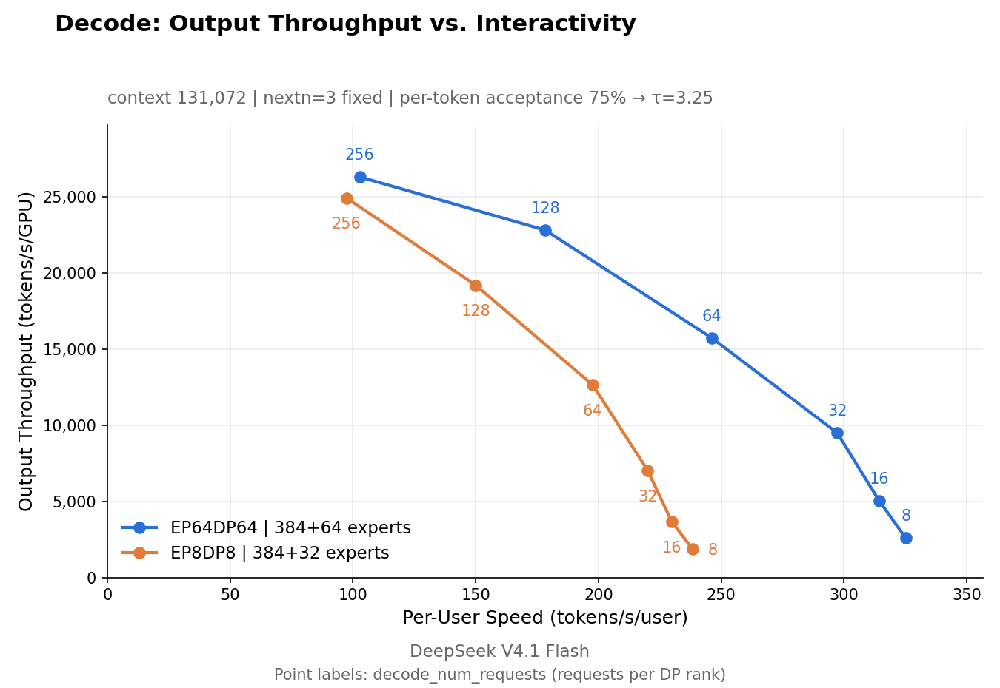
这张图回答什么
比较扩大EP域后，单位GPU总产出和单个用户生成速度之间的权衡。越靠右上越理想，但每个点都有固定负载条件。
坐标、图例与方向
横轴为每用户输出速度，tokens/s/user；纵轴为每GPU输出吞吐，tokens/s/GPU，均线性刻度。蓝线EP64DP64，橙线EP8DP8；点旁8—256是每个DP rank的decode请求数，不是全局请求数。
按这个顺序看
先固定纵轴，水平比较相同吞吐下谁更快；再固定横轴，垂直比较相同用户速度下谁产出更多。最后沿一条线看并发增大时速度下降、吞吐上升的取舍。
代入一个例子
在标注64的点附近，蓝线约245 tokens/s/user与15.7K tokens/s/GPU，橙线约198与12.6K；这是同一每rank请求数的粗读，不能说两系统全局并发一样。
能得出什么，边界在哪
配置为131072上下文、nextn=3；总体接受率75%是绘图换算假设，τ=3.25。384+64/384+32包含冗余专家，非专家模型容量改变。图不是本次实测。
| 机制 | 主要收益 | 代价/验证对象 |
|---|---|---|
| Attention DP | 分散不同请求 | 按请求数和累计 KV 工作量均衡 |
| CP | 拆分同一长上下文 | 通信、因果切分与元数据开销 |
| MoE EP | 专家分片与更大专家批次 | all-to-all、热点、跨域互联 |
| EPLB | 热点专家副本与物理放置 | 额外权重、统计与重排成本 |
整理者的均匀路由估算；真实关键路径由最忙专家和最慢 rank 决定。
Attention DP 不表示完整模型复制到每卡。训练路由平衡影响逻辑专家的选择；推理 EPLB 主要调整逻辑专家的物理副本和放置。功能支持 CP，也不代表生产配置必然使用 CP。
07 / 推理系统 原 PDF · 26
DSpark：收益是每轮输出除以每轮成本
draft、验证策略和设备批量必须一起分析。
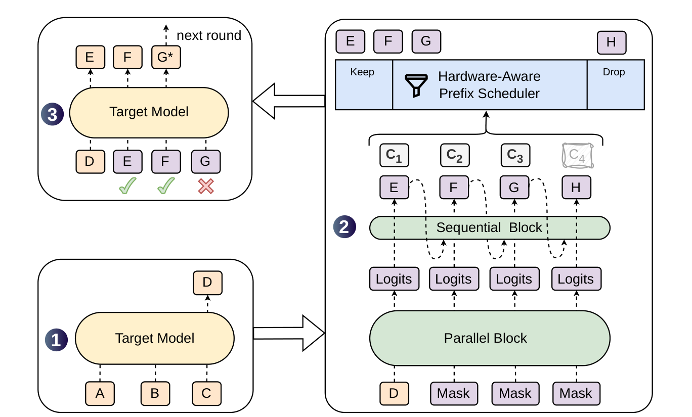
这张图回答什么
把DSpark拆成生成候选、置信度调度、target验证三个阶段，理解为什么接受率和验证成本要一起优化。
坐标、图例与方向
无数值轴；按圆形编号1→2→3读。紫色是draft候选，绿色部分是draft计算模块，黄色是target；勾与叉标出接受和拒绝，G*为纠正输出。
按这个顺序看
先看target已有前缀ABC产生D；再看并行块和轻量串行块提出EFGH及置信度；调度器裁掉不值得验证的尾部后，target一次验证保留前缀，遇拒绝后纠正并进入下一轮。
代入一个例子
图中E、F被接受而G被拒绝，G后面的候选不能直接输出。省下验证H的预算，只有在调度成本与质量语义都受控时才成为收益。
能得出什么，边界在哪
调度不能任意看完所有候选再倒推验证长度就宣称无损；论文需要non-anticipating与early-stop条件，生产用预测预算和因果隔离。高接受率也不自动保证更快。
DSpark 将较重的并行 draft backbone 与轻量串行 head 结合，用置信度安排验证预算。更高接受率可能被更贵的 drafter 抵消；更长候选也可能使验证步变慢。
c_i 是前面位置均通过时的条件接受概率；前缀存活概率需连乘。额外纠正/bonus token 的记账取决于实际算法。
验证要覆盖：第一个拒绝位置、target 纠正采样、丢弃候选的 KV、输出分布、置信度校准以及随机数状态。速度正确和采样语义正确都要证明。
08 / 训练与推理连接 原 PDF · 27
DeepSpec：可运行的专项学习闭环
从 draft 训练 loss 一直追踪到真实服务中的有效输出。
这张图回答什么
用一次拒绝的例子解释推测解码中接受前缀、纠正位置和丢弃后缀的规则。
坐标、图例与方向
无数值坐标；横向是draft候选的顺序，底部是target验证。青色表示本例通过的候选，橙色表示拒绝或被连带丢弃的后缀，宽度不是概率。
按这个顺序看
从第1个候选开始顺序判断：前面通过，后面才有接受前提；找到首个拒绝位置，按target规则纠正，处理候选KV，再开始新一轮。
代入一个例子
图示前三个通过、第4个拒绝，第5个即使单独看起来合理也不能沿原候选前缀直接保留，因为它原本依赖的第4个token已经改变。
能得出什么，边界在哪
真实算法还涉及bonus token、重采样分布、KV回退和随机数状态。接受数应按实际输出记账，不能用平均置信度直接乘draft长度。
公开数据流程：下载并切分 prompts → 用指定 target 重生成答案 → 预计算 target cache → 训练 draft → 测接受量 → 接入推理引擎验证端到端收益。
| 环节 | 最少控制变量 | 验收结果 |
|---|---|---|
| 数据与教师 | target revision、采样设置、任务域 | 数据无泄漏、轨迹与目标一致 |
| Draft 训练 | 算法、参数量、缓存特征、步数 | held-out loss 与逐位置接受量 |
| 跨域评估 | 对话、代码、thinking 分布 | 接受率迁移与置信度校准 |
| 引擎集成 | target、负载、输出预算、验证策略 | 同质量/预算下的有效 tokens/s |
兼容性快照：DeepInfer 5537415 固定 FlashMLA 2e5429f、DeepEP f6aa38f、DeepGEMM 1fc9c66。FlashMLA 当前主分支已发生硬件和 KV 格式的破坏性变化；历史模型应按 README 使用匹配提交。
08 / 本地部署 原 PDF · 28
算力预算：先回答能否运行，再估算效率
原报告快照中的 DeepInfer 的适配范围，不能与所有支持 DeepSeek 的引擎混为一谈。
这张图回答什么
建立能否部署的完整显存账本，再研究速度；总权重文件大小只能回答其中一小部分。
坐标、图例与方向
横向色带为预算项目示意，无数值轴。权重、缓存、工作区与余量分别成段，但50%/25%/17%/8%的画图比例并非任何模型的实测占比。
按这个顺序看
逐卡列出权重分片及副本，再按上下文×并发估KV，接着加激活、通信、图捕获和碎片余量。最后核验硬件架构、软件版本及互联是否支持。
代入一个例子
8张180GB设备合计1.44TB不等于每个模块都能随意使用整个池；某一张卡的复制权重或缓冲先超限，整机仍可能OOM。
能得出什么，边界在哪
容量足够不是最低卡数证明，也不代表算子已适配。原报告硬件与依赖是2026-10-26快照，实际部署须重新按固定提交核对。
| 项目 | 当前可核实情况 | 不能推出的结论 |
|---|---|---|
| 正式设备支持 | NVIDIA SM100 / Huawei Ascend 950 | Blackwell 消费卡不因同品牌架构就自动适配 |
| 系统与工具链 | Linux、Python 3.12、GCC≥13；CUDA13 / CANN9.2 | 不能仅按 Python 包能安装判断可运行 |
| 默认离线示例 | EP=8；DP/CP 按示例组织 | 8 卡不是已验证的最低配置 |
| 1017 模型文件 | 仓库体积约 510 GB（快照） | 文件大小不等于运行时显存 |
| README 性能图 | Prefill 4 卡、Decode 64 卡 SM100 | 生产曲线不代表单卡本地性能 |
固定 NVIDIA 依赖指定 torch==2.13.0+cu132，构建时应遵循快照。以 8×B200、每卡 180GB 为例，总物理显存约 1.44TB；这只是容量参考，仍需清点每卡副本、Engram、缓存和临时峰值，不能据此保证最低卡数。
09 / 评估方法 原 PDF · 29
吞吐—延迟—质量：三者必须同报
原始性能图用于学习实验设计；本报告未运行 GPU 集群性能测量。
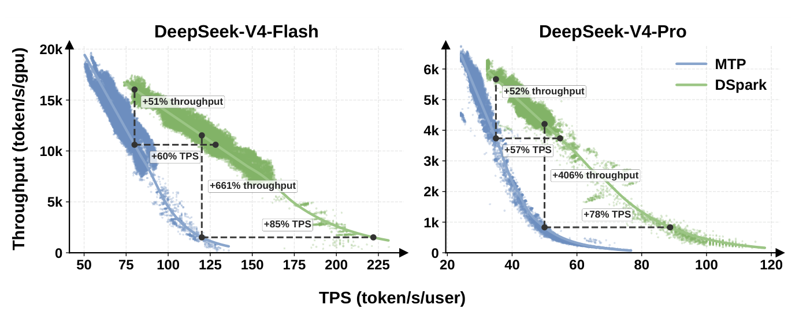
这张图回答什么
读懂推测解码的Pareto前沿：同时衡量单用户速度与系统单位GPU吞吐，避免把一种取舍说成普遍倍速。
坐标、图例与方向
横轴TPS为每用户tokens/s，纵轴为每GPUtokens/s；左图V4-Flash、右图V4-Pro，均线性刻度。蓝色MTP，绿色DSpark；散点是运行点，实线概括前沿。
按这个顺序看
先固定同一模型和负载协议；沿水平虚线比较相同吞吐下的速度提升，沿垂直虚线比较相同速度下的吞吐提升。不要把左右两图的绝对数值直接合并。
代入一个例子
左图约10.6K吞吐的水平对照，用户速度从约80到128，即约+60%；低吞吐水平另一组对照约+85%。这两点对应不同运行区间，不是所有请求都快同一比例。
能得出什么，边界在哪
+661%/+406%吞吐发生在严格交互约束使基线处于低利用率的边缘区域，不能当作通用倍数。对象为V4生产系统、当时MTP基线，非V4.1本次实测。
结果单位：tokens/s/GPU。N 是每个 DP rank 的 decode 请求数，不是全局请求总数。
上述采用候选全接受记账。固定长度验证（MTP_VARLEN=0）的绘图换算可用总体接受率 a 和 τ=1+nextn×a；a 不是逐位置条件概率。变长验证应直接统计实际 emitted tokens，不套用该固定长度换算。
| 必须固定或记录 | 最小内容 |
|---|---|
| 模型与系统 | checkpoint、引擎/子模块提交、精度、硬件与互联 |
| 请求与采样 | 输入/输出长度、cache hit、并发/到达率、温度、思考预算 |
| 服务效果 | TTFT/TPOT 分位数、有效吞吐、完成率、任务质量 |
| 过程诊断 | SPS、实际接受数、回退、热点、HBM 与通信 |
继续读原始性能曲线：Prefill 与 Decode
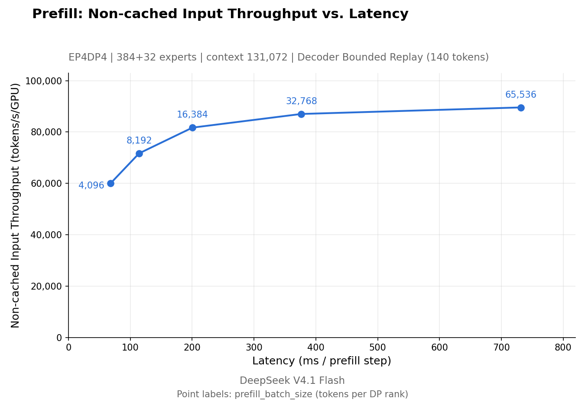
这张图回答什么
补充观察prefill阶段的吞吐与单步延迟权衡，帮助把首token瓶颈和后续生成瓶颈分开。
坐标、图例与方向
横轴为每个prefill step的延迟，单位ms，越左越快；纵轴为每GPU未命中缓存的输入吞吐，tokens/s/GPU，越上产出越多，均线性刻度。点旁4096—65536是每DP rank的prefill_batch_size（token数），不是请求数。
按这个顺序看
先核对EP4DP4、384+32专家、131072上下文和140-token decoder bounded replay，再沿曲线看批量增大如何同时提高吞吐与步延迟。它与decode图横轴的优劣方向相反，不能机械地说越右越好。
代入一个例子
点16384约为200ms/step、82K tokens/s/GPU；点65536约为730ms/step、89K。批量扩大4倍只带来约9%的吞吐增益，却明显增加单步时间，体现吞吐趋于饱和。
能得出什么，边界在哪
官方该图使用4张SM100、一个scale-up域；step latency不是请求端到端TTFT，且未命中输入token与完整请求token口径不同。本图非本次实测。
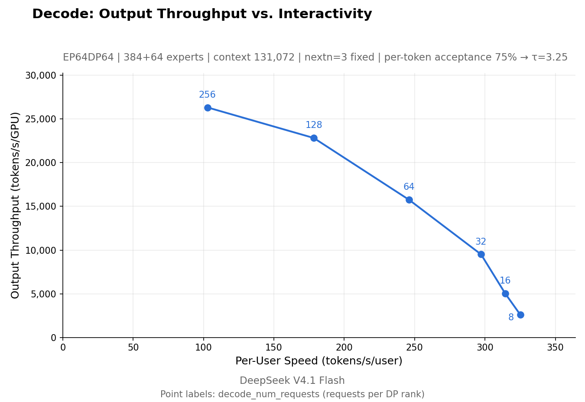
这张图回答什么
补充阅读decode阶段在不同负载点的用户体验与系统产出，作为Wide-EP专门对照的背景。
坐标、图例与方向
横轴是每用户输出速度tokens/s/user，纵轴是每GPU输出吞吐tokens/s/GPU，均线性刻度；两者均越大越好。点旁8—256为每个DP rank的decode请求数。图使用64张SM100、单个scale-up域。
按这个顺序看
固定EP64DP64、384+64专家和131072上下文，沿曲线从右往左看并发增加：每用户速度下降，但每GPU吞吐提高；再按所需交互速度选择最高可行吞吐点。
代入一个例子
标注8的点约337 tokens/s/user、2.6K tokens/s/GPU；标注256约103与26K。小批量更流畅，大批量更能填满设备，这是同一系统的不同运行点。
能得出什么，边界在哪
nextn=3固定，总体接受率75%为绘图换算假设，τ=3.25；每GPU吞吐并非全系统总吞吐，图也不能预测本地单卡性能。
把性能指标翻译成使用体验
| 指标 | 在回答什么 | 读数时要对齐 |
|---|---|---|
| TTFT | 发出请求后多久看到第一个输出。 | 含排队、缓存和输入处理；prefill step毫秒不等于它。 |
| TPOT / 每用户速度 | 开始输出后，字接着出现得有多快。 | 平均或分位数、是否突发输出、tokens/s/user与ms/token。 |
| 吞吐 | 一段时间内系统真正完成多少输出。 | 每GPU还是集群、真实输出还是全接受假设、延迟约束。 |
| 接受率 | draft候选被target保留多少。 | 总体比例还是逐位置条件概率；还要算draft与验证时间。 |
| Loss / Reward / Pass@1 | 预测意外程度 / 验证器反馈 / 一次采样的任务成功表现。 | 它们不是同一种质量指标；奖励升高仍要看独立评估。 |
09 / 实验设计 原 PDF · 30
六个实验，建立自己的工程判断
以下均为建议方案，不是本报告已经执行的训练或 GPU 性能结果。
| 实验 | 控制变量与对照 | 交付与验收 |
|---|---|---|
| A / 架构等价 | 小维度 MLA 展开/吸收；先 FP32，再低精度 | 输出与梯度误差、KV 预算；解释 RoPE 分支 |
| B / 数据价值 | 相同 tokens 与底座；去重、过滤、混合逐项消融 | 数据卡、域内/域外 loss 与任务质量 |
| C / GRPO 信号 | 固定任务；改变成功率、G、验证器和长度 | 有效奖励组、梯度信号、独立成功率 |
| D / MoE 系统 | 均匀/偏斜路由；EP、冗余副本、重叠开关 | 最慢 rank、通信/计算时间线、峰值内存 |
| E / 推测解码 | 关闭/短/长 draft；固定/置信度验证；跨负载 | 实际输出/轮、完整步成本、质量与 Pareto |
| F / 异步 RL | 固定预算；改变陈旧度、mask、路由重放和并发 | 固定 GPU 小时预算下的独立质量、有效 token/秒、长度分布偏差 |
每次实验都保存一份可重放记录
数据/环境/验证器版本；模型 revision；训练与推理代码提交；随机种子；采样参数；loss 与 mask 定义；硬件拓扑；依赖清单；原始测量窗；失败样本与独立评估结果。
09 / 源码路线 原 PDF · 31
按问题读源码，不按目录漫游
阶段推进以交付物为准，不要求先具备训练完整模型的集群。
| 顺序 | 主要入口 | 完成标准 |
|---|---|---|
| 1 / 模型计算图 | V3 model.py；V4.1 model.py 与 config | 画出逐层 shape、参数与缓存所有权 |
| 2 / 数据与目标 | DeepSeekMath、R1 附录、V4.1 数据/后训练章节 | 完成数据契约与一个可验证小闭环 |
| 3 / 训练执行 | DualPipe examples；DeepEP 与 DeepGEMM 接口 | 给出 MoE 前反向依赖和成本账本 |
| 4 / 推理执行 | LLM → Engine → Scheduler → ModelRunner | 解释三个请求阶段与状态回收 |
| 5 / 跨模块验证 | DeepSpec；DeepInfer benchmark 与 cache | 将接受率、输出质量和端到端成本连接 |
固定的 DeepInfer 阅读快照：553741557a57df44a46fb3ab72b6aafeaf945337
以下路径可从固定提交仓库进入，避免主分支变化导致阅读结果不同。
deepinfer/engine/llm_engine.py
附录 B / 术语与口径 原 PDF · 35
常用缩写，以及它们不代表什么
阅读论文时先对齐词义，再比较数值。
| 术语 | 含义与边界 |
|---|---|
| NTP / MTP | 下一 token / 多 token 预测；训练目标与推理验证机制要分开 |
| MLA / DSA / CSA(2) | 低秩缓存、学习式稀疏访问、压缩与跨层共享；优化对象不同 |
| CED / SWA | 因果 encoder-decoder / 滑动窗口注意力；不能套用双向 Seq2Seq 假设 |
| MoE / EP / EPLB | 条件专家网络 / 专家并行 / 专家物理副本与放置平衡 |
| DP / PP / CP | 数据、流水线、上下文并行；不同算子中的 rank 分布需要分别画图 |
| SFT / RL / OPD | 监督微调、强化学习、on-policy 蒸馏；数据状态分布不同 |
| GRPO / KL / IS | 组相对策略优化、分布约束、重要性采样；实现粒度决定目标 |
| TTFT / TPOT / SPS | 首 token 时间、每输出 token 时间、设备步速；不等于有效吞吐 |
| HBM / KV / State | 设备高带宽内存、注意力缓存、其他运行状态；容量需分项 |
| 总参数 / 激活参数 | 存储容量 / 单次计算路径口径；不能互相替代 |
| 近似 / 等价 | 质量可接受的改变 / 给定假设下相同结果；证明和验收不同 |
GB/TB 为十进制，GiB/TiB 为二进制。序列长度示例中的 128Ki token 指 131072 token；图中 K 若沿用原论文，则保留原论文定义。
附录 C / 原图索引 原 PDF · 36
原图出处与使用位置
少量摘录原图用于讲解；周围论述、中文重绘和数值示例为学习整理。
| 来源 | 原图定位 | 本报告用途 |
|---|---|---|
| V3 技术报告 v2 | Figure 2，PDF p7 | MLA + MoE 基本结构 |
| V3 技术报告 v2 | Figure 3，PDF p10 | MTP 串接与训练目标 |
| V3.2 技术报告 | Figure 2，PDF p4 | DSA 索引路径 |
| V4 技术报告 | Figure 3，PDF p9 | CSA 序列压缩与局部分支 |
| V4.1-Flash 技术报告 | Figure 3，PDF p7 | CED 与层级布局 |
| V4.1-Flash 技术报告 | Figure 4，PDF p10 | CSA2 Full / Reindex / Reuse |
| R1 技术报告 v2 | Figure 2，PDF p6 | 多阶段训练流程 |
| V3 技术报告 v2 | Figure 5，PDF p13 | DualPipe 时序 |
| DeepInfer 官方 Q&A | architecture_overview.png | 生产推理系统边界 |
| DeepInfer 官方 Q&A | wide_ep_decode_pareto.png | Wide-EP 特定配置性能比较 |
| DSpark 论文 v1 | Figure 1，PDF p5 | draft 架构与解码循环 |
| DSpark 论文 v1 | Figure 7，PDF p18 | V4 吞吐—速度 Pareto |
图源对应附录 A 的 [V3]、[V32]、[V4]、[V41P]、[R1]、[QA]、[DSPARK]。PDF 页码为文件内从 1 开始计数。原图保留英文标签，中文图注重新撰写；论文周围正文未整体复制。
网页逐图索引
- 图01 · 自绘示意｜依据本节资料整理；图中例子与估算均为教学用途。
- 图02 · 原图摘自 DeepSeek-V3 技术报告 v2，Figure 2，PDF 第 7 页。保留英文标注；裁去周围正文。
- 图03 · 自绘示意｜依据本节资料整理；图中例子与估算均为教学用途。
- 图04 · 自绘示意｜依据本节资料整理；图中例子与估算均为教学用途。
- 图05 · 原图摘自 V3 技术报告 v2，Figure 3，PDF 第 10 页。
- 图06 · 原图摘自 V3.2 技术报告，Figure 2，PDF 第 4 页：indexer 为主注意力选择历史位置。
- 图07 · 原图摘自 V4 技术报告，Figure 3，PDF 第 9 页：先压缩 KV，再做稀疏选择，并保留局部窗口。
- 图08 · 原图摘自 DeepSeek-V4.1-Flash 技术报告，Figure 3，PDF 第 7 页。
- 图09 · 原图摘自 V4.1-Flash 技术报告，Figure 4，PDF 第 10 页：CSA2 的三种运行模式。
- 图10 · 自绘示意｜依据本节资料整理；图中例子与估算均为教学用途。
- 图11 · 论文原图｜R1 技术报告 v2，Figure 2，PDF 第 6 页：R1-Zero 与 R1 的多阶段训练。
- 图12 · 自绘示意｜依据本节资料整理；图中例子与估算均为教学用途。
- 图13 · 自绘示意｜依据本节资料整理；图中例子与估算均为教学用途。
- 图14 · 论文原图｜V3 技术报告 v2，Figure 5，PDF 第 13 页：双向流水调度。原图建议放大查看微批时序。
- 图15 · 自绘示意｜依据本节资料整理；图中例子与估算均为教学用途。
- 图16 · 官方原图｜DeepInfer 部署 Q&A，architecture_overview.png，固定提交 5537415。生产架构示意，非当前开源版本所有组件的交付清单。
- 图17 · 自绘示意｜依据本节资料整理；图中例子与估算均为教学用途。
- 图18 · 自绘示意｜依据本节资料整理；图中例子与估算均为教学用途。
- 图19 · 自绘示意｜依据本节资料整理；图中例子与估算均为教学用途。
- 图20 · 官方原图｜DeepInfer Wide-EP 对照：V4.1-Flash、131072 上下文、nextn=3，图表按人工给定总体接受率 75% 修正；不是本次实测，也不是任意拓扑的收益保证。
- 图21 · 论文原图｜DSpark，Figure 1，PDF 第 5 页；保留图内容，中文说明为重新撰写。CC BY 4.0。
- 图22 · 自绘示意｜依据本节资料整理；图中例子与估算均为教学用途。
- 图23 · 自绘示意｜依据本节资料整理；图中例子与估算均为教学用途。
- 图24 · 论文原图｜DSpark Figure 7，PDF 第 18 页。对象是 V4-Flash/Pro 与当时 MTP 生产基线，不能标成 V4.1 的本地性能；保留原图配置。CC BY 4.0。
- 图25 · 官方补充原图｜DeepInfer 固定提交 Q&A，4×SM100，prefill性能；保留原始配置与图例。
- 图26 · 官方补充原图｜DeepInfer 固定提交 Q&A，64×SM100，decode性能；保留原始配置与图例。
SOURCE LIBRARY / 一手资料
回到论文与源码
报告资料快照：2026-10-26；网页整理与关键来源复核：2026-11-17。固定论文、固定提交与可变官方入口分开阅读。
- [V2] DeepSeek-V2 技术报告https://arxiv.org/abs/2405.04434
- [V3] DeepSeek-V3 技术报告 v2https://arxiv.org/abs/2412.19437v2
- [R1] DeepSeek-R1 技术报告 v2https://arxiv.org/abs/2501.12948v2
- [V32] DeepSeek-V3.2 技术报告https://arxiv.org/abs/2512.02556
- [V4] DeepSeek-V4 技术报告https://arxiv.org/abs/2606.19348
- [V41] DeepSeek-V4.1-Flash 官方模型与技术报告https://huggingface.co/deepseek-ai/DeepSeek-V4.1-Flash
- [V41P] DeepSeek-V4.1-Flash 技术报告 v1https://arxiv.org/abs/2609.19969v1
- [MATH] DeepSeekMath 数据与 GRPO 论文https://arxiv.org/abs/2402.03300v3
- [CODER] DeepSeek-Coder 数据与微调https://github.com/deepseek-ai/DeepSeek-Coder
- [CFG41] V4.1-Flash-1017 模型配置https://huggingface.co/deepseek-ai/DeepSeek-V4.1-Flash-1017/blob/08c8657f02291e11b6f6b63e0e16014f8e748518/config.json
- [MODEL3] V3 参考模型实现https://github.com/deepseek-ai/DeepSeek-V3/blob/main/inference/model.py
- [MODEL41] V4.1-1017 参考模型实现https://huggingface.co/deepseek-ai/DeepSeek-V4.1-Flash-1017/blob/08c8657f02291e11b6f6b63e0e16014f8e748518/inference/model.py
- [HAI] HAI-LLM 官方设计介绍https://www.high-flyer.cn/en/blog/hai-llm/
- [INFRA] DeepSeek Open Infra 索引https://github.com/deepseek-ai/open-infra-index
- [PIPE] DualPipe 官方仓库https://github.com/deepseek-ai/DualPipe
- [EP] DeepEP 官方仓库https://github.com/deepseek-ai/DeepEP
- [GEMM] DeepGEMM 官方仓库https://github.com/deepseek-ai/DeepGEMM
- [MLA] FlashMLA 官方仓库https://github.com/deepseek-ai/FlashMLA
- [INFER] DeepInfer 固定提交 READMEhttps://github.com/deepseek-ai/DeepInfer/blob/553741557a57df44a46fb3ab72b6aafeaf945337/README.md
- [QA] DeepInfer 固定提交部署设计问答https://github.com/deepseek-ai/DeepInfer/blob/553741557a57df44a46fb3ab72b6aafeaf945337/doc/inference_deployment_qa.md
- [EX] DeepInfer 固定提交示例与评测口径https://github.com/deepseek-ai/DeepInfer/blob/553741557a57df44a46fb3ab72b6aafeaf945337/examples/README.md
- [BENCH] DeepInfer benchmark.py 固定提交https://github.com/deepseek-ai/DeepInfer/blob/553741557a57df44a46fb3ab72b6aafeaf945337/examples/benchmark.py
- [CACHE] DeepInfer cache_engine.py 固定提交https://github.com/deepseek-ai/DeepInfer/blob/553741557a57df44a46fb3ab72b6aafeaf945337/deepinfer/worker/cache_engine.py
- [REQ] DeepInfer NVIDIA 固定依赖https://github.com/deepseek-ai/DeepInfer/blob/553741557a57df44a46fb3ab72b6aafeaf945337/requirements-nvidia.txt
- [SPEC] DeepSpec 官方仓库https://github.com/deepseek-ai/DeepSpec
- [SPECDATA] DeepSpec 数据准备流程https://github.com/deepseek-ai/DeepSpec/blob/main/scripts/data/README.md
- [DSPARK] DSpark 论文https://arxiv.org/abs/2607.05147
- [RECIPE] deepseek-recipe 官方仓库https://github.com/deepseek-ai/deepseek-recipe
- [DATA] DeepSeek 官方数据集列表https://huggingface.co/deepseek-ai/datasets
- [PROVER] DeepSeek-Prover-V1 专项数据集https://huggingface.co/datasets/deepseek-ai/DeepSeek-Prover-V1
- [HF1017] V4.1-Flash-1017 模型文件https://huggingface.co/deepseek-ai/DeepSeek-V4.1-Flash-1017/tree/main
- [B200] NVIDIA HGX B200 规格https://images.nvidia.com/aem-dam/Solutions/documents/HGX-B200-PCF-Summary.pdf
- [FSDP] PyTorch FSDP 官方说明（教学并行示例）https://docs.pytorch.org/docs/2.15/fsdp.html